POSTERS · 1991—2016
Muziek op papier.
Door de jaren heen.
Van Torhout tot Werchter: ontdek de posters uit het archief. Klik op een affiche om het groter te bekijken.
Het posterarchief
13 affiches · op jaar
Zoekt op jaartal; de artiestennamen op de posters zijn niet doorzoekbaar.
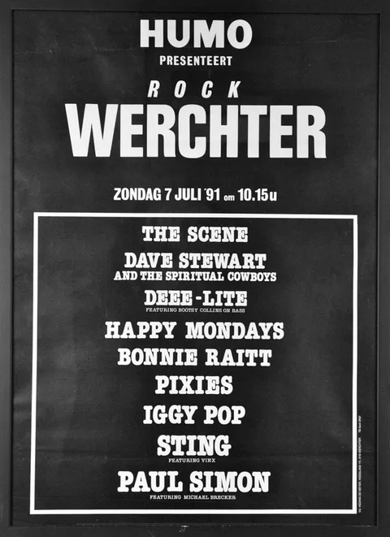
1991Rock Torhout / Werchter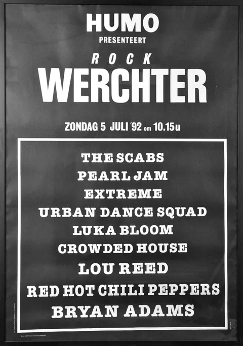
1992Rock Torhout / Werchter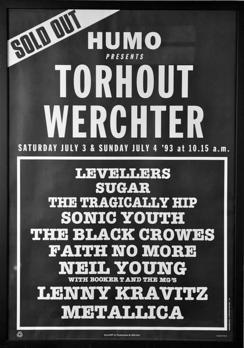
1993Rock Torhout / Werchter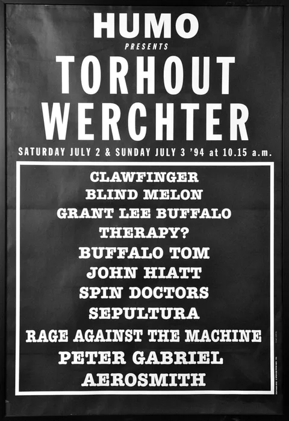
1994Rock Torhout / Werchter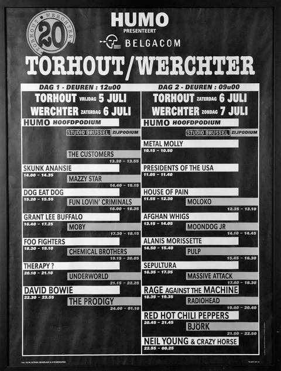
1996Rock Torhout / Werchter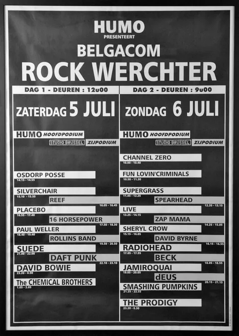
1997Rock Torhout / Werchter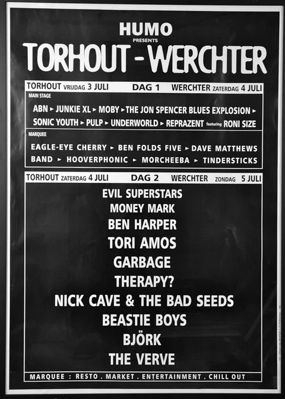
1998Rock Torhout / Werchter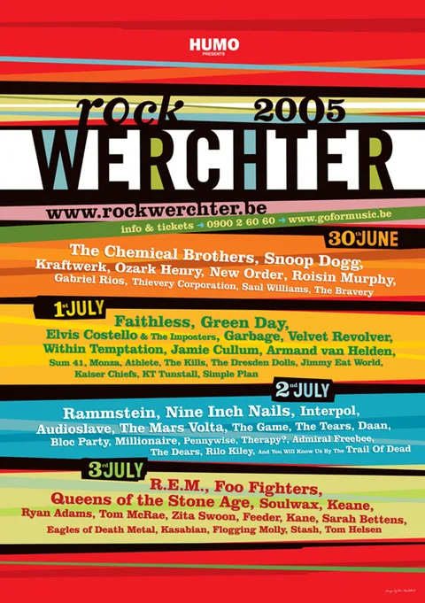
2005Rock Werchter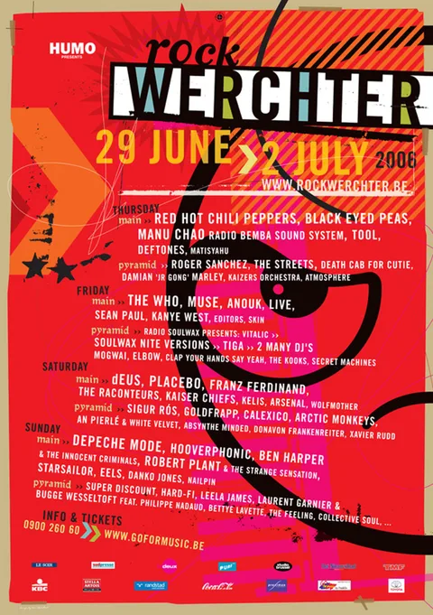
2006Rock Werchter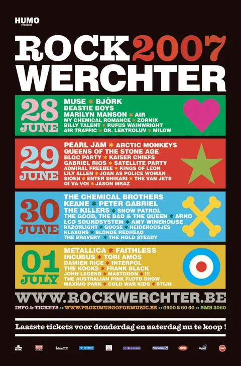
2007Rock Werchter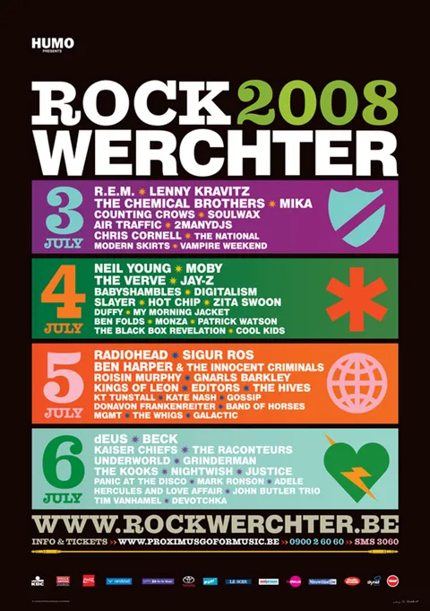
2008Rock Werchter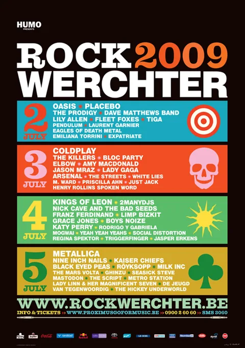
2009Rock Werchter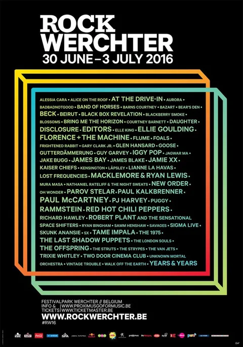
2016Rock Werchter